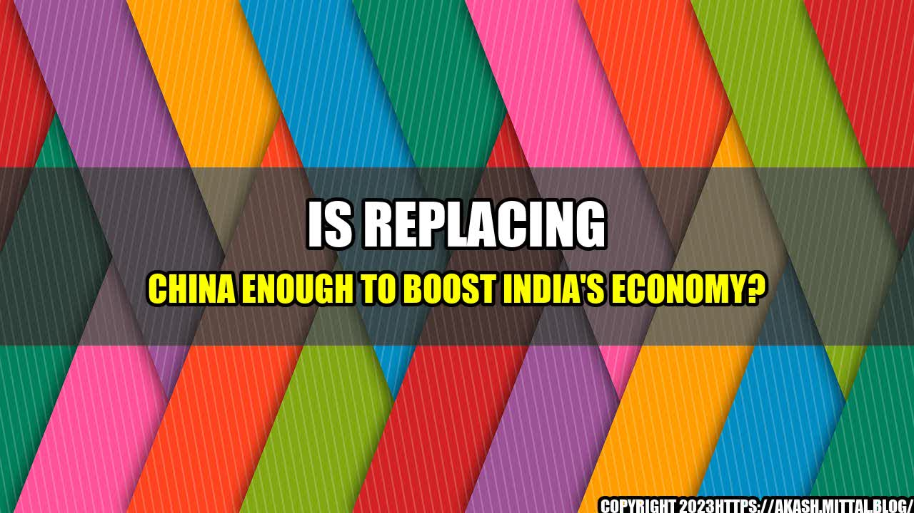

Is Replacing China Enough to Boost India's Economy?

An in-depth analysis of the potential impact of India's 'Atmanirbhar Bharat' policy

India's recent move to promote a self-reliant economy and reduce its dependence on China is gaining steam. However, many are wondering whether replacing China is enough to boost India's economy. To answer this question, we need to delve into the intricacies of both countries' economies and understand the potential ramifications of India's 'Atmanirbhar Bharat' policy.
A Look at India's Economy
India has been hailed as one of the fastest-growing major economies in the world. Its GDP has grown at a steady rate of around 7% over the past few years, and its manufacturing sector has been a key driver of this growth. However, India's economic growth has been hampered by several factors, such as a lack of infrastructure, low productivity, and a large informal economy. Additionally, India has faced challenges in attracting foreign investment due to its complex regulatory framework and bureaucratic red tape.
Furthermore, India's trade deficit with China has been a growing concern for policymakers. In 2019, India's trade deficit with China was around $56 billion, with Chinese imports accounting for around 14% of India's total imports. This has led to calls for reducing India's dependence on Chinese imports and promoting domestic manufacturing.
The Impact of India's 'Atmanirbhar Bharat' Policy
India's 'Atmanirbhar Bharat' policy, which translates to 'self-reliant India,' aims to reduce India's dependence on imports, especially from China, and promote domestic manufacturing. The policy includes initiatives such as providing incentives to domestic manufacturers, imposing higher tariffs on imports, and promoting exports.
While the policy has garnered support from many quarters, it has also faced criticism for being protectionist and inward-looking. Some argue that the policy may lead to a rise in prices and limit consumer choice, while others worry that it may deter foreign investment.
However, it's important to note that India's 'Atmanirbhar Bharat' policy is not just about replacing China. It's also about building a self-reliant economy that can compete with other major economies globally. By promoting domestic manufacturing and reducing its dependence on imports, India aims to become a more self-sufficient economy that can generate employment and contribute to sustainable economic growth.
To understand the potential impact of India's 'Atmanirbhar Bharat' policy, let's look at some quantifiable examples:
- India's mobile phone industry: India has become the world's second-largest mobile phone manufacturer, with companies such as Samsung, Apple, and Xiaomi setting up manufacturing facilities in the country. This has been a direct result of the government's 'Make in India' initiative, which aims to promote domestic manufacturing.
- India's solar panel industry: India has become one of the world's largest producers of solar panels, with the government setting a target to install 100 GW of solar capacity by 2022. Domestic manufacturing of solar panels has given a boost to the economy, with companies such as Adani Solar, Vikram Solar, and Waaree Energies setting up manufacturing facilities in the country.
- India's textile industry: India has a large and diverse textile industry, with traditional textile hubs such as Surat, Ludhiana, and Tirupur leading the way in exports. India's 'Atmanirbhar Bharat' policy aims to promote domestic manufacturing of textiles, with a focus on high-value products such as technical textiles.
Conclusion
In conclusion, India's 'Atmanirbhar Bharat' policy has the potential to boost India's economy by promoting domestic manufacturing and reducing its dependence on imports, especially from China. However, replacing China alone is not enough to boost India's economy. India needs to address several other challenges, such as improving infrastructure, increasing productivity, and reducing bureaucratic red tape to attract foreign investment and promote sustainable economic growth.
Therefore, India's 'Atmanirbhar Bharat' policy should not be viewed as a panacea for India's economic challenges. Rather, it should be seen as a step in the right direction towards building a self-reliant economy that can compete with other major economies globally.
In summary, India's 'Atmanirbhar Bharat' policy aims to:
- Promote domestic manufacturing and reduce India's dependence on imports, especially from China
- Create employment and contribute to sustainable economic growth
- Become a self-sufficient economy that can compete with other major economies globally
Hashtags
- #AtmanirbharBharat
- #MakeInIndia
- #IndiaChinaTension
- #SelfReliantIndia
- #DomesticManufacturing
Article Category
Economy and Business
Curated by Team Akash.Mittal.Blog
Share on Twitter Share on LinkedIn